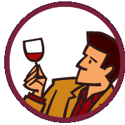

Generar reporte ranking de vinos
GENERAR RANKING DE VINOS
Generar un informe con los 10 mejores vinos rankeados para un periodo definido según ciertas características.

“El mejor vino no es necesariamente el más caro, sino el que se comparte”.